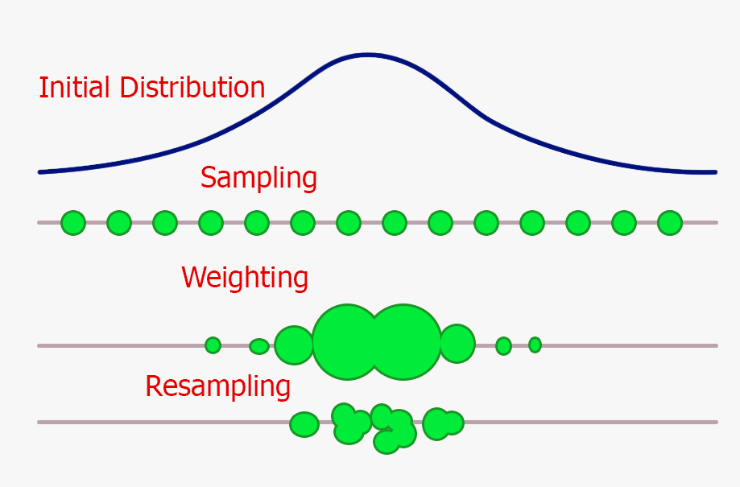

Flexible Distributed Particle Filtering for the Internet of Things via Aggregate Computing
Angela Cortecchia, Davide Domini, Giovanni Ciatto, Roberto Casadei, Danilo Pianini, and Mirko Viroli
Department of Computer Science and Engineering (DISI)
Alma Mater Studiorum – University of Bologna - Cesena, Italy

Application
Estimating hidden state of dynamic systems from partial, noisy observations.
IoT perspective
Many cyber-physical systems estimate hidden dynamical states over time.
Examples include target tracking, environmental monitoring, mobility, and smart-city applications.
Constraint
The state is not directly observable.
We only receive noisy, partial, and spatially distributed measurements.

Problem Statement
Core problem: reconstruct latent dynamics from uncertain observations.
Classical linear estimation techniques are not suitable: the system of interest exhibits non-linear dynamics and non-Gaussian uncertainty.
Therefore, we need an estimator that does not force the posterior into a simple closed-form shape, but can maintain multiple uncertain hypotheses over time.
The Filtering Problem
We want to estimate the hidden state of a dynamic system over time.
State-space view
At each time step:
$$ x_t = f(x_{t-1}, u_t) $$
$$ y_t = h(x_t, v_t) $$
where:
- $x_t$ is the hidden system state
- $y_t$ is the observation
- $u_t$ is process noise
- $v_t$ is measurement noise
Filtering objective
Given all observations so far:
$$ y_{1:t} = y_1, \dots, y_t $$
estimate the posterior belief:
$$ p(x_t \mid y_{1:t}) $$
This belief is updated recursively as new observations arrive.
Particle Filters (PF)
A practical way to track hidden state under nonlinear and non-Gaussian uncertainty.
Key idea
Instead of representing belief with a single estimate, a particle filter represents it with many possible hypotheses:
- each particle is one possible state of the system
- each weight says how plausible that hypothesis is
- likely particles are reinforced over time
- unlikely particles fade out
Interpretation
The estimate is not only a point: it is a cloud of weighted hypotheses.

At the beginning: particles explore many possible states.
(Centralized) Particle Filters
Posterior approximation
We estimate a hidden state $x_t$ from noisy observations $y_{1:t}$ by representing the posterior with weighted samples:
$$ p(x_t \mid y_{1:t}) \approx \sum_i w_t^i \delta(x_t - x_t^i) $$
One filtering iteration
- Prediction: propagate particles through the dynamical model
- Weighting: compare particles with the new observation
- Resampling: keep plausible hypotheses and discard weak ones
- Estimate: summarize the weighted particle cloud

The hard part is maintaining this belief as observations arrive over time.
Particle Filter Intuition Over Time
many possible hypotheses

belief concentrates

the cloud follows the target

uncertainty remains explicit
The particle cloud evolves as a moving approximation of the posterior belief.
Distributed Particle Filters
In IoT systems, observations are naturally collected by many spatially distributed devices.
From centralized PF
A classical PF assumes that all observations are available to a single estimator:
$$ p(x_t \mid y_{1:t}) $$
This is convenient, but hides the fact that sensing, computation, and communication are distributed.
To distributed PF
Each device $k$ observes only local information:
$$ y_{t,k} = h_k(x_t, v_{t,k}) $$
The goal is to approximate a global belief from distributed observations:
$$ p(x_t \mid y_{1:t,1:K}) $$
DPF keeps the PF logic, but turns filtering into a coordination problem among devices.
Different DPF Architectures
Why this matters
DPF is not a single algorithmic recipe.
The literature explores different ways to decide:
- where information is fused
- which nodes participate
- what information is exchanged
- how much communication is tolerated
The paper uses these families as a design space, not as separate solutions to present in detail.
Main trade-off: estimation quality vs communication burden vs robustness.

What Makes DPF Hard in Practice?
01. Particles and communication are costly
Particle filters require many particles, and exchanging particles, weights, or likelihoods can dominate the method.
02. Networks are imperfect
Communication delays, topology changes, asynchrony, and failures affect estimation quality.
03. Trade-offs dominate
DPF is always a compromise among accuracy, overhead, complexity, and robustness.
Aggregate Computing Background
A programming model for collective behaviour in distributed IoT systems.
Usual perspective
We often design distributed algorithms by specifying:
- device roles
- message flows
- communication protocols
- failure handling strategies

Aggregate perspective
Describe what collective behaviour should emerge from local interactions.
One macro-program runs on all devices; each device repeatedly senses, communicates with neighbours, computes, and acts.
Key point: coordination becomes a programmable abstraction, not an ad-hoc protocol.
Computational Fields
The central abstraction of Aggregate Computing is the computational field.
Local view
Each device computes a local value, using:
- local sensors
- local state
- messages from neighbours
Global view
The collection of all local values forms a field:
$$ \text{device/location} \mapsto \text{value} $$

Fields can represent measurements, estimates, leaders, regions, or information flows.
Reusable patterns include spreading, aggregation, converge-cast, and leader election.
Field-Based Distributed Particle Filtering
Main point
The goal is not to introduce yet another DPF algorithm.
The idea is to expose DPF as a configurable coordination problem.
Filtering logic
- Prediction
- Weighting
- Resampling
Coordination choices
- Where fusion happens
- What is exchanged
- How far information propagates
- Who is active
This is the paper’s main idea: architectural assumptions become design parameters, rather than hard-coded algorithmic commitments.
Contribution 1: Aggregate Measurements
A useful extra degree of freedom
Instead of exchanging particles, each node can run its own local particle filter while the weighting step exploits an aggregated measurement function built from neighboring observations.
$$ \hat{y}t = H{\mathcal{N}(k)} \bigl( { h_j(x_t, v_{j,t}) }_{j \in \mathcal{N}(k)} \bigr) $$

Nearby sensors collectively behave like a distributed sensor. This can be cheaper than exchanging particle sets.
Contribution 2: Resilient Fusion Center
Leader-based fusion as a field-level behavior
- Election: A leader is selected dynamically.
- Fusion: The leader behaves as the current fusion center.
- Failure: If the leader disappears, the role is released.
- Self-healing: A new leader resumes the behavior.
We can move along the spectrum between centralized simplicity and decentralized robustness through configuration.
Experimental Evaluation
The same target-tracking intuition is used to evaluate distributed variants.
Common setup
- 2D target tracking scenario
- Static network of 25 sensors on a perturbed grid
- Signal quality degrades with distance
- Sensors execute at 1 Hz
- 3000 simulated seconds
- 100 random seeds per configuration
Experiment 1
Local PF + aggregated measurements
Each sensor runs its own particle filter; neighbouring measurements are aggregated only for the weighting step.
Experiment 2
Elected leader as fusion center
Measurements are aggregated toward an elected leader; a leader failure is injected at time step 1500.
Main question: how much coordination is enough to improve tracking without paying the full cost of particle exchange?
Experiment 1: Local PF + Aggregated Measurements
Each sensor keeps its own local particle filter. No particles are exchanged.
Only the measurement used for weighting changes:
$$ |\mathcal{N}| \in {0, 1, 4, 7} $$
Increasing the neighbourhood size improves the quality of the aggregated observation, and therefore the trajectory estimate.
Experiment 1: Trajectories

Larger neighbourhoods make the local filters converge toward the real trajectory.
Experiment 1: RMSE

Result
With few neighbours, the error remains high.
Increasing $|\mathcal{N}|$ reduces the RMSE and improves long-term stability.
The benefit comes from sharing measurements, not particle sets.
Experiment 2: Leader-Based Fusion
An elected leader plays the fusion-center role.
When the leader fails at time step 1500, the system briefly destabilizes and then resumes tracking after re-election.
Message
Fusion-center behaviour can be retained without a permanently fixed center.

Takeaways
01. DPF is coordination-heavy
The particle-filter machinery is standard; the difficult part is deciding how information moves through the network.
02. Aggregate computing exposes the design space
Fusion, propagation, exchanged information, and active regions become configurable parameters.
03. Local cooperation can pay off
Aggregated measurements and leader election improve estimation behavior while avoiding fully centralized assumptions.